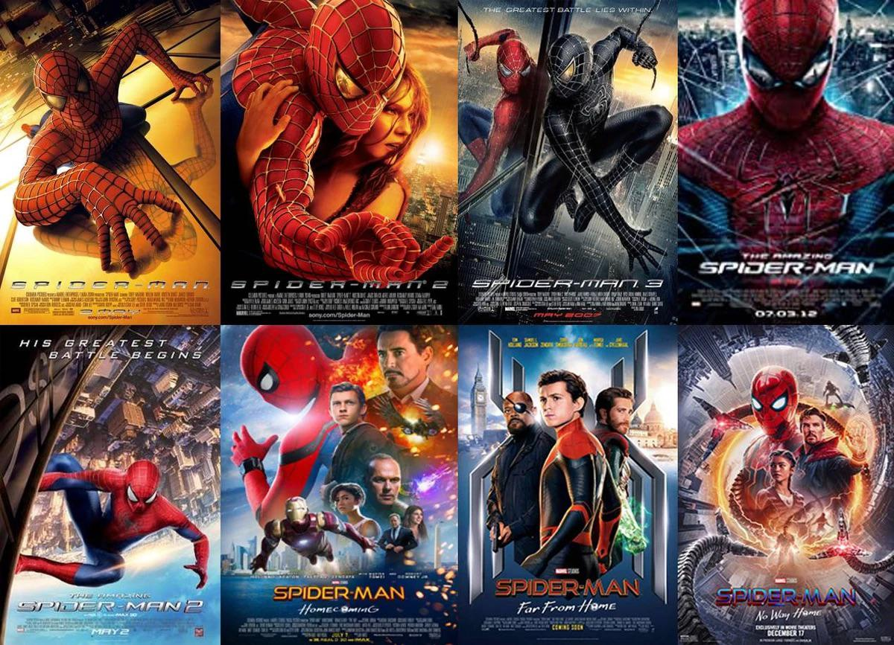
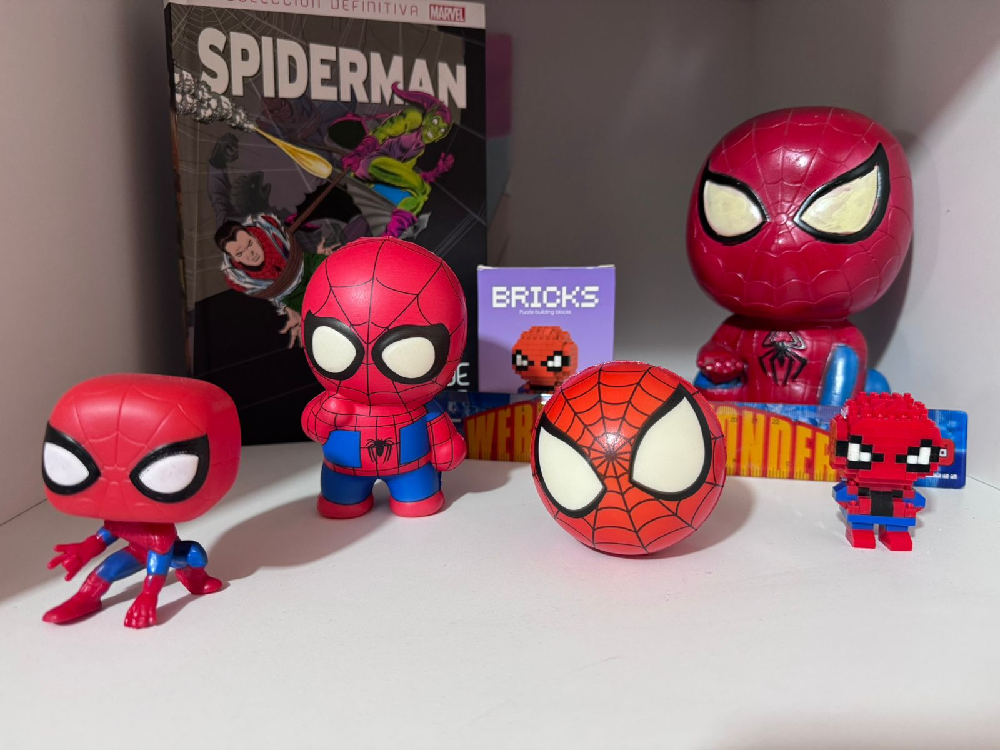
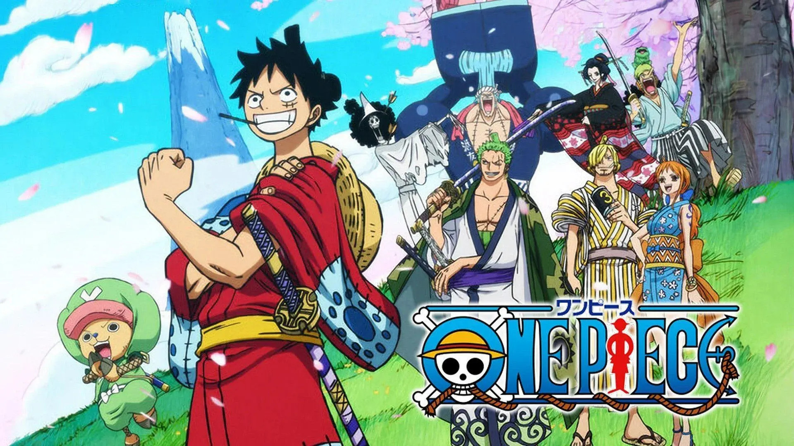

Interés personal
Spiderman es mi personaje favorito, me gusta mucho y tengo una pequeña colección de el.
Spiderman es un superhéroe que obtiene sus poderes tras ser mordido por una araña radiactiva. La historia gira en torno a su vida como joven estudiante y sus responsabilidades como héroe, donde aprende que un gran poder conlleva una gran responsabilidad.
Existen varias películas de Spiderman, incluyendo la trilogía original, las películas protagonizadas por Andrew Garfield y las más recientes con Tom Holland.

Spiderman es mi personaje favorito, me gusta mucho y tengo una pequeña colección de el.

Gone, Gone, Gone de Phillip Phillips
One Piece es un anime que trata sobre las aventuras de Monkey D. Luffy, un joven pirata con el sueño de convertirse en el Rey de los Piratas. A lo largo de su viaje, reúne una tripulación conocida como los Sombrero de Paja, conformada por personajes como Roronoa Zoro, Nami, Usopp, Sanji, Tony Tony Chopper, Nico Robin, Franky, Brook y Jinbe. Juntos recorren el mar enfrentando diferentes desafíos y enemigos mientras buscan el legendario tesoro llamado One Piece.

A continuación se presenta un video mostrando un poco de One Piece.
Me gusta ver novelas mexicanas y he visto varias a lo largo del tiempo, entre ellas Teresa, Rubí, Corona de lágrimas, Amor real, Lo que la vida me robó, Amor bravío, Una familia con suerte, Mi corazón es tuyo, Mañana es para siempre, Cuando me Enamoro Fuego en la sangre, Amorcito Corazón y Porque el amor manda. Mis novelas favoritas son Lo que la vida me robó, Mañana es para Siempre y Amor bravío.